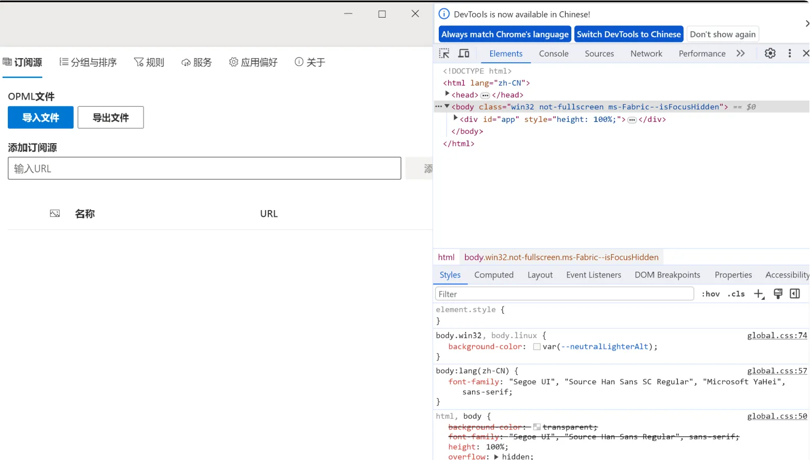
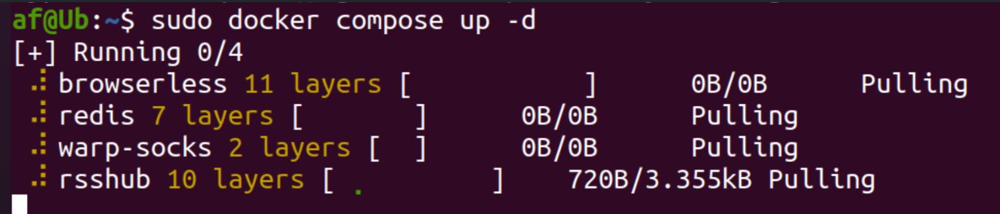
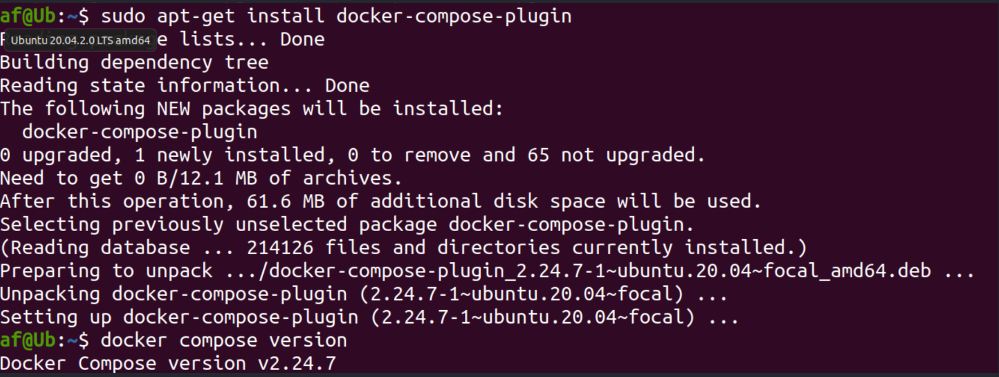
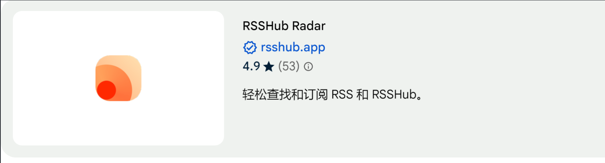
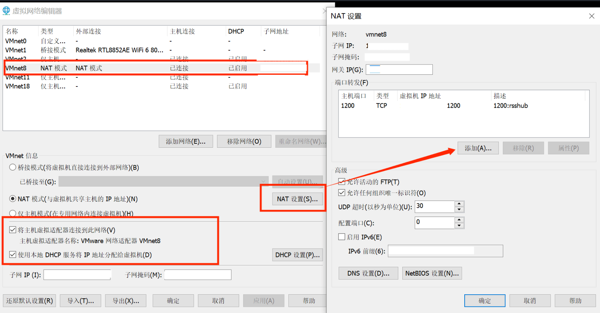

Reader:NetNewsWire（mac）/flunt reader(win)
As you see, I recommend both readers, and this time I used Fluent Reader.
netnewswire(free for mac):
fluent reader(free for win):
fluent reader
Install：
1.Simply and crudely go directly to the release installation
https://github.com/yang991178/fluent-reader/releases
u will see this:

OK,done.
Converter:RSShub
env-build:
ubuntu20.0.4+docker
1.install docker
#update
sudo apt update
#Install dependencies
sudo apt install apt-transport-https ca-certificates curl gnupg-agent software-properties-common
#Import the GPG key to original warehouse
curl -fsSL https://download.docker.com/linux/ubuntu/gpg | sudo apt-key add -
#Add software sources to the system
sudo add-apt-repository "deb [arch=amd64] https://download.docker.com/linux/ubuntu $(lsb_release -cs) stable"
#install the latest docker engine version
sudo apt install docker-ce docker-ce-cli containerd.io docker-compose-plugin
——————
#If you want to specify the version
-apt list -a docker-ce
-sudo apt install docker-ce=<VERSION> docker-ce-cli=<VERSION> containerd.ioenable docker：
sudo systemctl start dockerVerify it
sudo docker run hello-world or sudo systemctl status dockerStart automatically at boot
sudo systemctl enable docker2.install docker compose 2.2version+
sudo apt-get update sudo apt-get install docker-compose-plugin docker compose versionthen
sudo docker compose up -d
compose V2 silution:
https://docs.docker.com/compose/install/linux/#install-using-the-repository3.download RSSHub image
docker pull diygod/rsshubaf@Ub:~$ sudo docker pull diygod/rsshub
Using default tag: latest
latest: Pulling from diygod/rsshub
8a1e25ce7c4f: Already exists
503fbb4f74df: Already exists
d4c959539bae: Already exists
be130823ea8b: Already exists
0a3e0e033aaa: Already exists
e0db59620584: Already exists
10f590c4cc54: Already exists
90b97647e2ce: Already exists
4f4fb700ef54: Already exists
02d10b2b3aef: Pull complete
Digest: sha256:57def26db42e6fc63157c0a6e6cea280e2d344c91612cd6c88c0b20b53372550
Status: Downloaded newer image for diygod/rsshub:latest
docker.io/diygod/rsshub:latestrun RSSHub
#When you first run docker run -d --name rsshub -p 1200:1200 diygod/rsshub # after docker start rsshubOpen in ur browser http://127.0.0.1:1200/ (opens new window)，enjoy it! ✅
You need to download a plug-in in your browser: rsshub radar

- shutdown RSShub
docker stop rsshub
You can check the default port of rsshub 1200
lsof -i:1200Extention:
Because my docker is deployed on vmware, if I want to access it directly through a local browser :
I need local <--port mapping--->VMwareVirtual Network Editor---->Change Settings--->NAT Network Card--->NAT Settings---->Add
reference:
dockerdocs:https://docs.docker.com/engine/install/
rsshub:https://rsshub-doc.pages.dev/install/#shou-dong-bu-shu-tian-jia-pei-zhi
Management platform:Inoreader
But,The domestic version is very very slow😐, you can also use fluent reader alone.😉
Feed:
QnA
- if u want to use proxy:
（Take CLASH as an example）
Or the image doesn’t load
FR shortcut-----> property --- target, space and then add:
--proxy-server=socks5://127.0.0.1:7890If you have any questions, contact me plz!!!
🦁